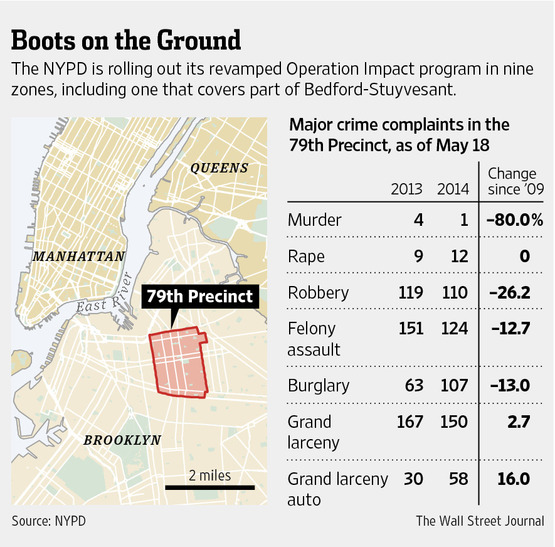
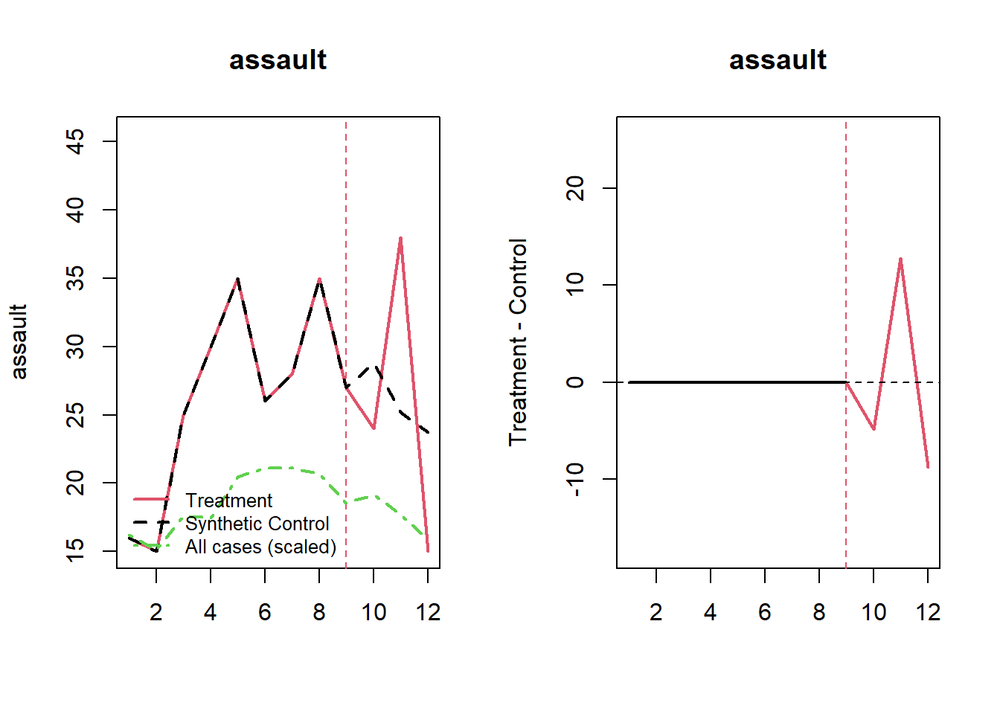
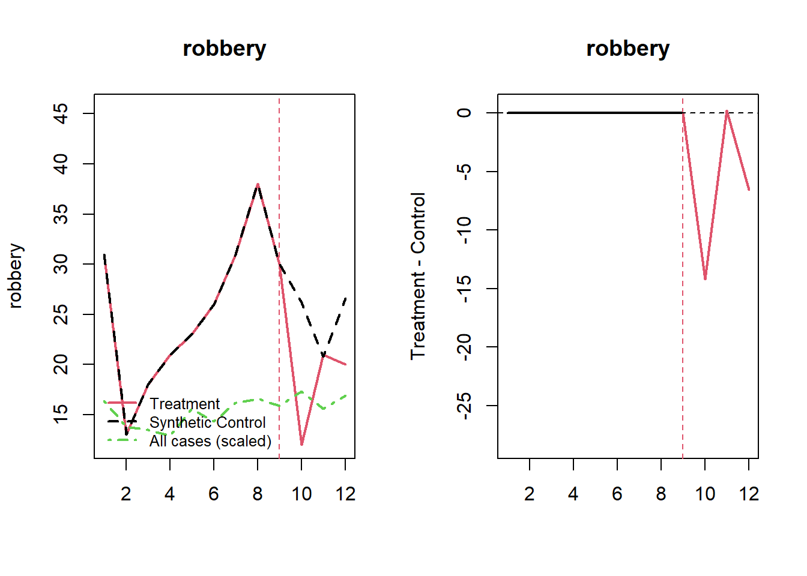

| precinct | geoid | impact | total_pop | total_hh | total_male | total_white | total_hispan | total_black | total_poverty | total_snap | month | assault | burglary | mvt | robbery | theft |
|---|---|---|---|---|---|---|---|---|---|---|---|---|---|---|---|---|
| 1 | 3.6061e+10 | 0 | 7315 | 1090 | 3539 | 4594 | 479 | 332 | 586 | 14 | 1 | 0 | 0 | 0 | 0 | 5 |
| 1 | 3.6061e+10 | 0 | 7315 | 1090 | 3539 | 4594 | 479 | 332 | 586 | 14 | 2 | 1 | 0 | 0 | 0 | 1 |
| 1 | 3.6061e+10 | 0 | 7315 | 1090 | 3539 | 4594 | 479 | 332 | 586 | 14 | 3 | 1 | 3 | 0 | 1 | 7 |
| 1 | 3.6061e+10 | 0 | 7315 | 1090 | 3539 | 4594 | 479 | 332 | 586 | 14 | 4 | 0 | 1 | 0 | 1 | 6 |
| 1 | 3.6061e+10 | 0 | 7315 | 1090 | 3539 | 4594 | 479 | 332 | 586 | 14 | 5 | 0 | 1 | 0 | 0 | 5 |
| 1 | 3.6061e+10 | 0 | 7315 | 1090 | 3539 | 4594 | 479 | 332 | 586 | 14 | 6 | 0 | 0 | 0 | 1 | 3 |
Synthetic Controls in Statistics
Andrew Gelman recently covered a mildly controversial paper in criminology that suggested that a policy of “de-prosecution” by the Philadelphia District Attorney’s office resulted in an increase in homicides. This has sparked a lot of back-and-forth discussion on the appropriateness of the analysis and the kind of synthetic control method used. I’m not here to discuss any of these things, as many other smart people have already debated this to death (plus, given Hogan is reticent to release his data or code we may never really know exactly what he did).
However, what I do want to discuss is something else Gelman wrote about on his blog:
Hogan and the others make comparisons, but the comparisons they make are to that weighted average of Detroit, New Orleans, and New York. The trouble is . . . that’s just 3 cities, and homicide rates can vary a lot from city to city. It just doesn’t make sense to throw away the other 96 cities in your data. The implied counterfactual is that if Philadelphia had continued post-2014 with its earlier sentencing policy, that its homicide rates would look like this weighted average of Detroit, New Orleans, and New York…
What Gelman is talking about here is the commonly-used ADH approach (short for Abadie, Diamond, and Hainmueller). In this method you typically have one large “treated” area - such as a city or state - that implements some kind of policy. You then use other comparably large or similar areas to construct a synthetic version of your treated unit to estimate the counterfactual. It’s an appealing method because it is relatively simple to calculate, fairly transparent about where the weights come from, and has good overlap with more conventional difference-in-differences methods (non-negative weights with a sum-to-one constraint). So in a way, I don’t necessarily have the same issues that Gelman does, but he brings up a good point. By using only large aggregate units there is an inherent loss of information. In the ADH method we sort of assume that by matching closely on the outcome variable we can average over a lot of the confounders. Although in the ADH method you can also match on other covariates - but in my experience the vast majority of the synthetic control weights are derived solely from the pre-treatment outcomes.
Micro-Synthetic Controls
Gelman further writes:
My understanding of a synthetic controls analysis went like this. You want to compare Philadelphia to other cities, but there are no other cities that are just like Philadelphia, so you break up the city into neighborhoods and find comparable neighborhoods in other cities . . . and when you’re done you’ve created this composite “city,” using pieces of other cities, that functions as a pseudo-Philadelphia. In creating this composite, you use lots of neighborhood characteristics, not just matching on a single outcome variable. And then you do all of this with other cities in your treatment group (cities that followed a de-prosecution strategy).
Which describes another approach that has grown in popularity, especially among criminologists. This so-called “micro-synthetic” approach constructs synthetic controls from many small pieces to comprise a larger treated piece. The classic criminological example might be that you have a neighborhood in your city with 20 census blocks that gets some focused deterrence intervention. You can use the remaining “untreated” census blocks in the city to use as composite pieces as part of the synthetic control. This approach is especially appealing because so much criminological research has a focus on small, disaggregated regions.
An Example: Operation Impact (2014)
As a quick demo, here’s an example I presented for part of NIJ’s Smart Suite. The research question posed here is whether a surge in police activity New York City’s 47th precinct reduced assaults or robberies. There were a number of previous iterations of Operation Impact which an evaluation found a general decrease in crime(MacDonald, Fagan, and Geller 2016). The example here looks at a much later surge in 2014:

The data I organized for this example contains block-level census data from the American Community Survey, as well as monthly counts of some major crime categories (here: assault, burglary, motor vehicle theft, robbery, and larceny-theft). This is organized in a long-form dataset, which is indexed by precinct * geoid * month.
The precinct we’re interested in, the 47th, is comprised of 44 census blocks which are each measured at 12 time points. The remainder of the census blocks in the dataset are part of our “donor” pool, which we can use for our synthetic control.
Applying the ‘Microsynth’ approach
The R package microsynth does almost all of the heavy lifting(Robbins and Davenport 2021). Without getting too much into the weeds, the general idea here is that we want to re-weight all of our untreated (non-Operation Impact) census blocks in a way that makes them nearly - or exactly - identical to the census blocks in the 47th precinct. Microsynth accomplishes this much in the same way that surveys are weighted to approximate the population of interest. However, instead here we treat the 47th precinct as our “population” and estimate weights to apprxomiate the pre-treatment outcomes and covariates in the treated precinct. The full code to run the model is below:
fit <-
microsynth(
nyc_impact,
idvar = 'geoid',
timevar = 'month',
intvar = 'impact',
start.pre = 1,
end.pre = 9,
end.post = 12,
match.out = c('assault', 'robbery'),
match.covar = c(
'total_pop',
'total_black',
'total_hispan',
'total_poverty',
'total_snap'),
result.var = c('assault', 'robbery'),
omnibus.var = c('assault', 'robbery'))As a start, we can assess whether our synthetic control is appropriately balanced on pre-treatment differences. As we saw above, we matched on both time-varying and non time-varying covariates. Looking at the balance table below we see that we achieved exact balance on all our variables - which is quite good! This should give us more confidence that the outcomes we observe in the post period are due to the intervention, and not a result of systematic differences between treated and control units.
| Targets | Weighted.Control | All.scaled | |
|---|---|---|---|
| Intercept | 23 | 23 | 23.00 |
| total_pop | 77311 | 77311 | 89810.67 |
| total_black | 44079 | 44079 | 23373.48 |
| total_hispan | 15693 | 15693 | 26494.13 |
| total_poverty | 24022 | 24022 | 18865.98 |
| total_snap | 6558 | 6558 | 4875.89 |
| assault.9 | 27 | 27 | 18.56 |
| assault.8 | 35 | 35 | 20.69 |
| assault.7 | 28 | 28 | 21.13 |
| assault.6 | 26 | 26 | 21.10 |
| assault.5 | 35 | 35 | 20.43 |
| assault.4 | 30 | 30 | 17.44 |
| assault.3 | 25 | 25 | 17.57 |
| assault.2 | 15 | 15 | 15.14 |
| assault.1 | 16 | 16 | 16.22 |
| robbery.9 | 30 | 30 | 15.89 |
| robbery.8 | 38 | 38 | 16.61 |
| robbery.7 | 31 | 31 | 16.19 |
| robbery.6 | 26 | 26 | 14.36 |
| robbery.5 | 23 | 23 | 15.60 |
| robbery.4 | 21 | 21 | 12.91 |
| robbery.3 | 18 | 18 | 13.50 |
| robbery.2 | 13 | 13 | 13.79 |
| robbery.1 | 31 | 31 | 16.39 |
We can print out the results as well. Here we see that the observed number of assaults and robberies in the post-period were 77 and 53 for the 47th precinct, and 77.7 and 73.5 for the synthetic control, respectively. In the case of robbery we estimate that Operation Impact resulted in about a 28% decrease in robberies for the 3-month period in 2014.
|
It’s also helpful to visualize what this looks like. Looking at the results we see that most of the decrease in robberies occurred immediately after the start of the program. For assaults there’s a slight dip early on, but the overall results are more mixed.
Code
plot_microsynth(fit)

Full Code
Code
library(microsynth)
set.seed(1)
# note: a good vignette is provided here:
# https://cran.r-project.org/web/packages/microsynth/vignettes/introduction.html
# data comes from NYC open data and US Census bureau, compiled by me
# dependent variable is the number of assaults and robberies in Q3 2014
# when time > 9
# census-level variables from the ACS 2014 5-year estimates
# and are presented as raw counts, to facilitate weighting
# b/c microsynth uses survey weighting via survey::calibrate()
# file url
df <- url('https://www.dropbox.com/s/08owr5710bnvxn0/nyc_impact_long.csv?raw=1')
# read into R
nyc_impact <- read.csv(df)
# MICROSYNTH
#-----------------------#
# model 1, without permutation-based inference
# test statistics are calculated as weighted linear model
# each microsynth needs the following:
# idvar = variable identifying observations
# timevar = variable indexing observations by time
# intvar = variable that takes on 1 for treated units, post treatment
# is 0 otherwise
# start.pre, end.pre, end.post define the start of the study period, the end
# of the pre-period, and the end of the post period
# match.out = the time-varying variables that are to be matched exactly
# match.cov = the time-invariant variables to be matched exactly
# result.var = the outcome variable(s) of interest
# omnibus.var = the outcome variable(s) that should be used in the calculation
# of an omnibus p-value
fit <-
microsynth(
nyc_impact,
idvar = 'geoid',
timevar = 'month',
intvar = 'impact',
start.pre = 1,
end.pre = 9,
end.post = 12,
match.out = c('assault', 'robbery'),
match.covar = c(
'total_pop',
'total_black',
'total_hispan',
'total_poverty',
'total_snap'),
result.var = c('assault', 'robbery'),
omnibus.var = c('assault', 'robbery'))
# get the model summary
summary(fit)
# plot treated vs synthetic
# and gap plot of treated - synthetic
plot_microsynth(fit)
# PLACEBO-BASED INFERENCE
#-----------------------#
# this model is same as above, except we are calculating permutation p-values
# here, I set the number of permutations to just 100, but ideally you
# can set this higher. The more permutations you set, the longer the run time
fit2 <-
microsynth(
nyc_impact,
idvar = 'geoid',
timevar = 'month',
intvar = 'impact',
start.pre = 1,
end.pre = 9,
end.post = 12,
match.out = c('assault', 'robbery'),
match.covar = c(
'total_pop',
'total_black',
'total_hispan',
'total_poverty',
'total_snap'),
result.var = c('assault', 'robbery'),
omnibus.var = c('assault', 'robbery'),
perm = 100)
summary(fit2)
plot_microsynth(fit2)References
MacDonald, John, Jeffrey Fagan, and Amanda Geller. 2016. “The Effects of Local Police Surges on Crime and Arrests in New York City.” PLoS One 11 (6): e0157223.
Robbins, Michael W, and Steven Davenport. 2021. “Microsynth: Synthetic Control Methods for Disaggregated and Micro-Level Data in r.” Journal of Statistical Software 97: 1–31.